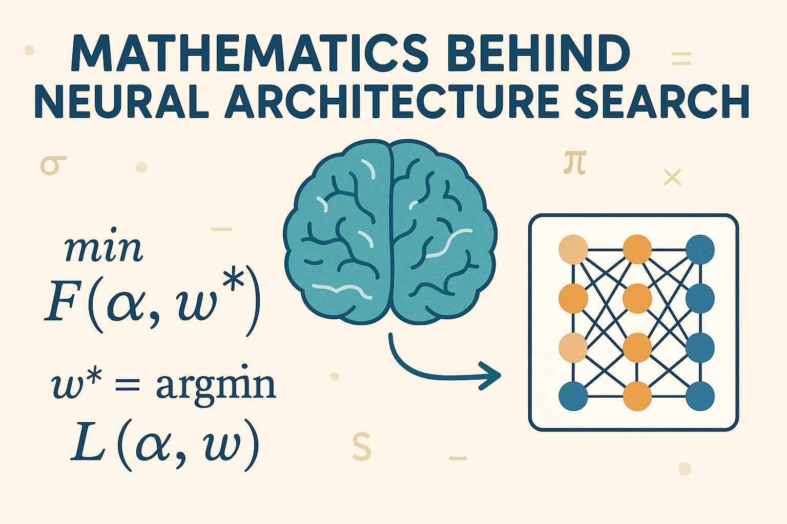

Neural Architecture Search (NAS) represents one of the most sophisticated applications of automated machine learning, where algorithms autonomously design neural network architectures. This field combines optimization theory, probability, and deep learning to solve the fundamental question: what is the optimal neural network architecture for a given task?
Problem Formulation
The core mathematical challenge in NAS can be formulated as a bilevel optimization problem. Given a dataset \(D = \{(x_i, y_i)\}_{i=1}^N\), we seek to find the optimal architecture \(\alpha^*\) that minimizes the validation loss:
\[\alpha^* = \arg \min_\alpha L_{\text{val}}(w^*(\alpha), \alpha)\]
where \(w^*(\alpha)\) is the optimal set of weights for architecture \(\alpha\), obtained by solving:
\[w^*(\alpha) = \arg \min_w L_{\text{train}}(w, \alpha)\]
This bilevel structure creates significant computational challenges, as evaluating each architecture requires full training to obtain \(w^*(\alpha)\).
Search Space Representation
Continuous Relaxation
One of the key mathematical innovations in NAS is the continuous relaxation of the discrete architecture search space. Instead of searching over discrete architectural choices, we can represent the search space as a continuous optimization problem.
Consider a search space where each edge in the network can be one of \(O\) operations from a set \(\mathcal{O} = \{o^1, o^2, \ldots, o^{|\mathcal{O}|}\}\). The continuous relaxation introduces architecture parameters \(\alpha = \{\alpha_{i,j}\}_{i,j}\) where \(\alpha_{i,j} \in \mathbb{R}^{|\mathcal{O}|}\).
The mixed operation at edge \((i,j)\) becomes:
\[o^{\text{mixed}}_{i,j}(x) = \sum_{k=1}^{|\mathcal{O}|} \frac{\exp(\alpha_{i,j}^{(k)})}{\sum_{l=1}^{|\mathcal{O}|} \exp(\alpha_{i,j}^{(l)})} \cdot o^{(k)}(x)\]
This softmax weighting allows gradient-based optimization while maintaining the constraint that weights sum to 1.
Graph-Based Representations
Neural architectures can be represented as directed acyclic graphs (DAGs) \(G = (V, E)\) where:
- \(V\) represents computational nodes (layers, operations)
- \(E\) represents data flow connections
The adjacency matrix \(A \in \{0,1\}^{|V|\times|V|}\) encodes the connectivity, where \(A_{i,j} = 1\) indicates a connection from node \(i\) to node \(j\).
For a node \(j\) with incoming edges from nodes \(i_1, i_2, \ldots, i_k\), the output is:
\[h_j = f_j\left(\sum_{i \in \text{pred}(j)} A_{i,j} \cdot h_i\right)\]
where \(f_j\) is the operation at node \(j\) and \(\text{pred}(j)\) denotes the predecessor nodes.
Optimization Strategies
Gradient-Based Methods (DARTS)
Differentiable Architecture Search (DARTS) transforms the discrete search into a continuous optimization problem. The architecture parameters \(\alpha\) and network weights \(w\) are optimized alternately:
\[\alpha_{t+1} = \alpha_t - \xi_\alpha \nabla_\alpha L_{\text{val}}(w_t, \alpha_t)\] \[w_{t+1} = w_t - \xi_w \nabla_w L_{\text{train}}(w_t, \alpha_t)\]
The gradient with respect to architecture parameters is:
\[\nabla_\alpha L_{\text{val}} = \sum_{i,j} \nabla_\alpha o^{\text{mixed}}_{i,j} \cdot \nabla_{o^{\text{mixed}}_{i,j}} L_{\text{val}}\]
The chain rule application requires careful handling of the softmax operation:
\[\nabla_{\alpha_{i,j}^{(k)}} o^{\text{mixed}}_{i,j} = (\delta_{k,l} - p_{i,j}^{(k)}) p_{i,j}^{(l)} \cdot o^{(l)}\]
where \(p_{i,j}^{(k)} = \frac{\exp(\alpha_{i,j}^{(k)})}{\sum_l \exp(\alpha_{i,j}^{(l)})}\) and \(\delta_{k,l}\) is the Kronecker delta.
Evolutionary Approaches
Evolutionary algorithms treat architecture search as a population-based optimization problem. Each architecture is represented as a genome \(g\), and the fitness function is typically the validation accuracy.
The mutation operator \(M: \mathcal{G} \to \mathcal{G}\) modifies architectures:
- Node mutations: Add/remove computational nodes
- Edge mutations: Add/remove connections
- Operation mutations: Change operation types
The crossover operator \(C: \mathcal{G} \times \mathcal{G} \to \mathcal{G}\) combines two parent architectures:
\[g_{\text{child}} = C(g_{\text{parent1}}, g_{\text{parent2}})\]
Common crossover strategies include:
- Uniform crossover: Each gene inherited from parent1 with probability \(p\)
- Graph crossover: Combine subgraphs from both parents
Reinforcement Learning Formulation
NAS can be formulated as a sequential decision problem where an agent (controller) generates architectures. The state space \(\mathcal{S}\) represents partial architectures, actions \(\mathcal{A}\) represent architectural choices, and rewards \(\mathcal{R}\) correspond to validation performance.
The policy \(\pi(a|s)\) gives the probability of selecting action \(a\) in state \(s\). The objective is to maximize expected reward:
\[J(\theta) = \mathbb{E}_{\pi_\theta}[R(\tau)]\]
where \(\tau\) is a trajectory (sequence of architectural decisions) and \(\theta\) are the controller parameters.
Using the REINFORCE algorithm, the gradient is:
\[\nabla_\theta J(\theta) = \mathbb{E}_{\pi_\theta}[\nabla_\theta \log \pi_\theta(a|s) \cdot (R(\tau) - b)]\]
where \(b\) is a baseline to reduce variance.
Probability and Sampling
Architecture Sampling
When using continuous relaxation, the final discrete architecture must be sampled. The Gumbel-Softmax trick provides a differentiable sampling mechanism:
\[\alpha_{\text{sampled}} = \text{softmax}\left(\frac{\log(\alpha) + g}{\tau}\right)\]
where \(g \sim \text{Gumbel}(0,1)\) and \(\tau\) is a temperature parameter controlling the sampling sharpness.
Bayesian Optimization
Some NAS methods model the architecture performance as a Gaussian process. Given observed architectures and performances \(\{(\alpha_i, y_i)\}_{i=1}^n\), we model:
\[f(\alpha) \sim \mathcal{GP}(\mu(\alpha), k(\alpha, \alpha'))\]
The acquisition function guides the search:
\[\alpha_{\text{next}} = \arg \max_\alpha a(\alpha|\{(\alpha_i, y_i)\}_{i=1}^n)\]
Common acquisition functions include:
- Expected Improvement: \(\text{EI}(\alpha) = \mathbb{E}[\max(0, f(\alpha) - f(\alpha_{\text{best}}))]\)
- Upper Confidence Bound: \(\text{UCB}(\alpha) = \mu(\alpha) + \beta \cdot \sigma(\alpha)\)
Weight Sharing and Supernets
One-Shot Architecture Search
Weight sharing reduces computational cost by training a single “supernet” containing all possible architectures. The supernet weight tensor \(W\) has dimensions accommodating all operations.
For a mixed operation with architecture weights \(\alpha\), the effective computation is:
\[\text{output} = \sum_k \alpha_k \cdot \text{op}_k(\text{input}, W_k)\]
The challenge is ensuring that shared weights \(W_k\) generalize across different architectural contexts.
Progressive Shrinking
Progressive shrinking gradually reduces the search space by removing poorly-performing operations. The pruning criterion at iteration \(t\) is:
\[\text{keep}_k = \begin{cases} 1 & \text{if } \alpha_k^{(t)} > \text{threshold}_t \\ 0 & \text{otherwise} \end{cases}\]
This creates a sequence of nested search spaces: \(\mathcal{S}_0 \supset \mathcal{S}_1 \supset \ldots \supset \mathcal{S}_T\).
Performance Prediction
Learning Curves and Extrapolation
Early stopping strategies predict final performance from partial training curves. Common models include:
- Power Law: \(f(x) = a \cdot x^b + c\)
- Exponential: \(f(x) = a \cdot e^{-bx} + c\)
- Logarithmic: \(f(x) = a \cdot \log(x) + b\)
The parameters are fitted using least squares on early training data, then extrapolated to predict full training performance.
Neural Predictors
Neural networks can predict architecture performance from structural features. Given an architecture encoding \(\phi(\alpha)\), a predictor network estimates:
\[\hat{y} = f_\theta(\phi(\alpha))\]
where \(\phi(\alpha)\) might include:
- Graph neural network embeddings
- Handcrafted features (depth, width, parameter count)
- Learned representations
Multi-Objective Optimization
Real-world NAS often involves multiple objectives: accuracy, latency, energy consumption, and memory usage. This creates a multi-objective optimization problem:
\[\min F(\alpha) = (f_1(\alpha), f_2(\alpha), \ldots, f_m(\alpha))\]
Pareto Optimality
An architecture \(\alpha^*\) is Pareto optimal if there exists no \(\alpha\) such that:
- \(f_i(\alpha) \leq f_i(\alpha^*)\) for all \(i\)
- \(f_j(\alpha) < f_j(\alpha^*)\) for at least one \(j\)
The Pareto front represents the set of all Pareto optimal solutions.
Scalarization Methods
- Weighted Sum: \(\min_\alpha \sum_i w_i \cdot f_i(\alpha)\)
- ε-Constraint: \(\min_\alpha f_1(\alpha)\) subject to \(f_i(\alpha) \leq \varepsilon_i\) for \(i > 1\)
- Chebyshev: \(\min_\alpha \max_i w_i \cdot |f_i(\alpha) - z_i^*|\)
where \(z_i^*\) is the ideal value for objective \(i\).
Complexity Analysis
Search Space Size
The size of the discrete search space grows exponentially with the number of choices. For a search space with:
- \(L\) layers
- \(O\) operations per layer
- \(C\) connections per layer
The total number of architectures is approximately \(O^L \cdot 2^{LC}\), making exhaustive search intractable for realistic problem sizes.
Computational Complexity
Different NAS methods have varying computational requirements:
- Exhaustive Search: \(\mathcal{O}(|\mathcal{S}| \cdot T)\) where \(|\mathcal{S}|\) is search space size and \(T\) is training time
- Gradient-Based: \(\mathcal{O}(K \cdot T)\) where \(K\) is number of gradient steps
- Evolutionary: \(\mathcal{O}(P \cdot G \cdot T)\) where \(P\) is population size and \(G\) is number of generations
- One-Shot: \(\mathcal{O}(T_{\text{supernet}} + |\mathcal{S}| \cdot T_{\text{eval}})\) where \(T_{\text{eval}} \ll T\)
Convergence Analysis
DARTS Convergence
For DARTS, convergence depends on the interplay between architecture and weight optimization. The coupled dynamics can be analyzed using:
\[\alpha_{t+1} = \alpha_t - \xi_\alpha \nabla_\alpha L_{\text{val}}(w^*(\alpha_t), \alpha_t)\] \[w_{t+1} = w_t - \xi_w \nabla_w L_{\text{train}}(w_t, \alpha_t)\]
Under certain conditions (convexity, smoothness), this alternating optimization converges to a stationary point. However, the bilevel nature and non-convexity of neural networks make theoretical guarantees challenging.
Evolutionary Algorithm Convergence
For evolutionary NAS, convergence analysis involves studying the transition probabilities between population states. The probability of finding the optimal architecture depends on:
- Selection pressure
- Mutation rates
- Population diversity
The expected hitting time to the optimum can be bounded using Markov chain analysis.
Practical Considerations
Regularization
Architecture search often requires regularization to prevent overfitting:
- Dropout on Architecture Parameters: Randomly zero some \(\alpha\) values during training
- Weight Decay: Add L2 penalty \(\lambda ||\alpha||^2\) to the loss
- Early Stopping: Stop search when validation performance plateaus
Search Space Design
The choice of search space significantly impacts results. Key considerations include:
- Expressivity: Can the space represent effective architectures?
- Efficiency: Can the space be searched efficiently?
- Inductive Bias: Does the space encode useful architectural priors?
Mathematical analysis of search spaces involves studying their geometric properties, connectivity, and the distribution of high-performing architectures.
Future Directions
Neural Architecture Search continues to evolve, with emerging mathematical frameworks addressing:
- Theoretical foundations: Convergence guarantees and optimality conditions
- Efficient search: Better approximation algorithms and search strategies
- Transferability: Mathematical models for cross-domain architecture transfer
- Interpretability: Understanding why certain architectures perform well
The mathematical sophistication of NAS continues to grow, drawing from diverse fields including optimization theory, probability, graph theory, and control theory. As the field matures, we expect to see more principled approaches that combine theoretical rigor with practical effectiveness.
Conclusion
The intersection of discrete optimization, continuous relaxation, and deep learning in NAS represents one of the most mathematically rich areas in modern machine learning, with applications extending far beyond neural network design to general automated algorithm design and meta-learning.